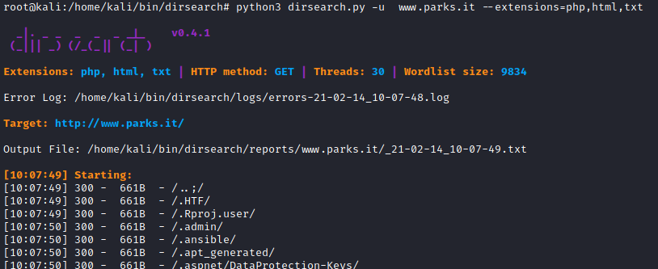

dirsearch
GitHub:
https://github.com/maurosoria/dirsearchDirsearch is
a command-line tool designed to brute force directories and files in webservers.
Dirsearch is command-line
only, and having been written in Python makes it easier to integrate into scripts and other existing
projects.
Dirsearch is faster than Dirb because support multithreading
Installation
root@kali:/# cd /home/kali/bin/
root@kali:/# git clone https://github.com/maurosoria/dirsearch.git
Update:
root@kali:/# cd /home/kali/bin/dirsearch
root@kali:/# git pull
root@kali:/# cd /home/kali/bin/dirsearch
root@kali:/# python3 dirsearch.py -u www.parks.it --extensions=php,html,txt
